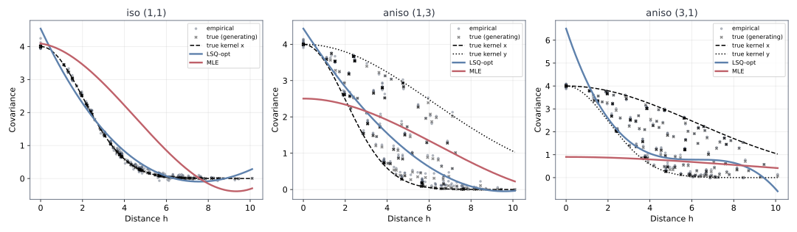
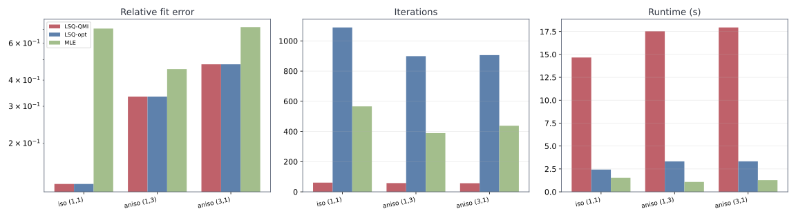
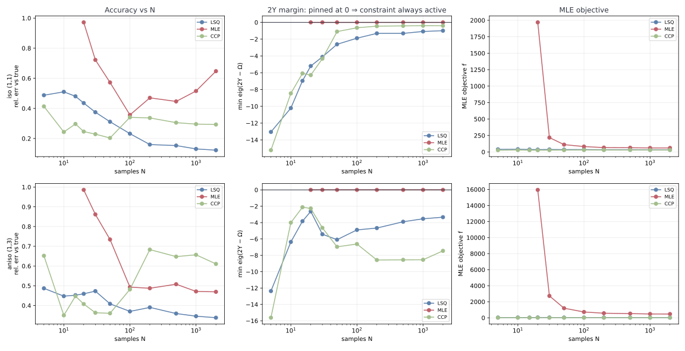
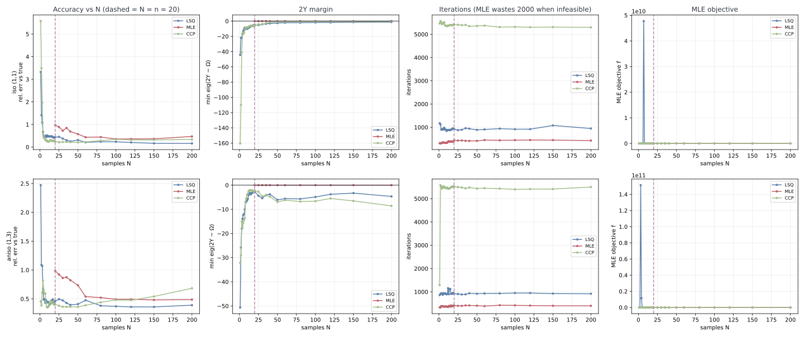
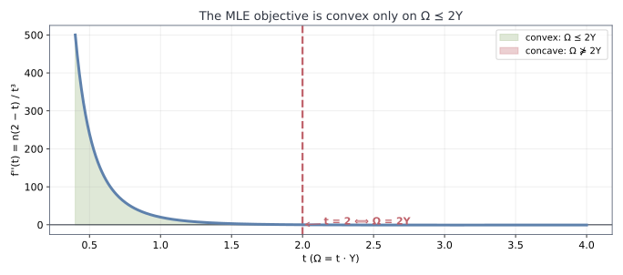
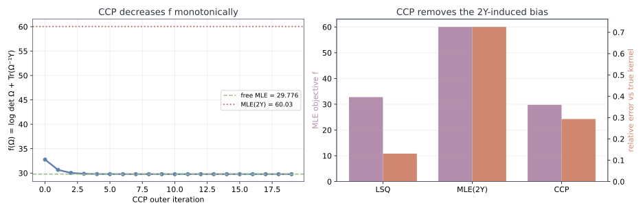

layout: true class: typo, typo-selection --- count: false class: nord-dark, middle, center # ⚖️ LSQ vs MLE ## Two solvers, one non-convex objective — and a bug in the C++ port ### 📉 🎯 🐛 @luk036 👨💻 · 2026 📅 --- ### 📋 Agenda .pull-left[ **Part 1 — The Question** 🧭 - Two solvers, two objectives - The isotropic / anisotropic experiment **Part 2 — The Experiment** 🔬 - LSQ tracks the true kernel 📈 - MLE does not 😬 - Sample size: $N = 5 \dots 2000$ 🔢 - Low end: $N = 1 \dots 200$ — failure regimes 💀 **Part 3 — The Non-Convexity** 📉 - The objective is a DC function - Convex **only** on $\Omega \preceq 2Y$ ] .pull-right[ **Part 4 — The Bugs** 🐛 - $2Y$ as a *hard constraint* - The C++ `inv` on a triangular factor **Part 5 — The Fix: CCP** 🪄 - Linearize the concave part - Fixed point = stationary point **Part 6 — Cross-Language** 🌍 - Python / Rust correct, C++ buggy - xmake verification ✅ ] --- class: nord-light, middle, center ## 🧭 Part 1 — The Question --- ### ⚖️ Two Solvers, Two Objectives Both fit a polynomial model $\Omega(p) = \sum_k p_k \Sigma_k$ to a biased sample covariance $Y$: > Two different objectives, two different feasible sets — **same basis family**. 🎯 .pull-left[ **LSQ** 🟦 — minimize the Frobenius residual $$ \min_p \; \|{\color{#bf616a}Y} - {\color{#5e81ac}\Omega(p)}\|_F \quad \text{s.t.} \quad {\color{#5e81ac}\Omega(p)} \succeq 0 $$ - **No** upper bound on $\Omega$ 🚫 - Directly targets the *shape* of $Y$ 🎯 ] .pull-right[ **MLE** 🟥 — maximize the Gaussian likelihood $$ \min_p \; \log\det {\color{#5e81ac}\Omega(p)} + \operatorname{Tr}\!\bigl({\color{#5e81ac}\Omega(p)}^{-1}{\color{#bf616a}Y}\bigr) $$ $$ \text{s.t.} \quad 2{\color{#bf616a}Y} \succeq {\color{#5e81ac}\Omega(p)} \succeq 0 $$ - Adds an **upper bound** $2Y$ 🤔 ] --- ### 🔬 The Experiment .pull-left[ **Problem** 🗺️ - $n = 20$ Halton sites, $m = 4$ coefficients - Basis $\{I, D, D^2, D^3\}$ — powers of Euclidean distance - **Isotropic**: $4\exp(-0.12\,d^2)$ - **Anisotropic**: per-axis widths $l_x, l_y$ - $N = 3000$ samples → $Y$ ] .pull-right[ **Solvers** 🧮 - LSQ-QMI — `QMIOracle` + `bsearch` - LSQ-opt — `lsq_oracle` + cutting-plane - MLE — `mle_oracle` + cutting-plane - **CCP** — convex-concave procedure **Metrics** 📏 - feasibility, iterations, runtime - relative fit error vs $Y$ - **relative error vs the true kernel** 🎯 ] --- class: nord-light, middle, center ## 🔬 Part 2 — The Experiment --- ### 📈 Does the Fit Match the True Kernel? <p align="center"> <p></p> </p> - **Black** = the original generating covariance and its per-axis kernels 🎯 - **Blue (LSQ)** tracks it; **red (MLE)** clearly does not 😬 - Anisotropy widens the true band — an isotropic basis cannot follow it 🌐 --- ### 📊 Metrics Side by Side <p align="center"> <p></p> </p> > LSQ-QMI and LSQ-opt give **identical** coefficients — a useful cross-check. ✅ --- ### 😬 The Anomaly | problem | LSQ rel-err | MLE rel-err | MLE objective | |:--|--:|--:|--:| | iso (1,1) | **0.128** | 0.705 | 60.03 | | aniso (1,3) | **0.334** | 0.451 | 470.5 | | aniso (3,1) | **0.476** | 0.716 | 2426.9 | - The MLE is **pinned to the $2Y$ boundary** — $\min\operatorname{eig}(2Y-\Omega) = 0$ 🧲 - Its $\Omega$ is nearly **singular**: $\log\det\Omega = -14.5$ 😱 - The true kernel sits *inside* the region with $f = 23.6$ — but it is **not in the basis family** ❗ - And the LSQ fit — which *does* track the kernel — lies just **outside** the region 🚪 > Is the MLE broken? Or is the **problem** broken? 🤔 --- ### 🔢 Sample Size: $N = 5 \dots 2000$ <p align="center"> <p></p> </p> - **$N < n$** → `Y` is singular → the MLE is **infeasible** 💀 - **Every $N$** → the `2Y` margin is pinned at **0** → the constraint is always active 🧲 - Anisotropy raises the misspecification floor (LSQ margin $-3.3$ vs $-1.0$) 📉 --- ### 📊 What More Data Does — and Doesn't — Fix | $N$ | LSQ rel-err | MLE rel-err | CCP rel-err | MLE `2Y` margin | |--:|--:|--:|--:|--:| | 5 | 0.49 | **infeasible** 💀 | 0.41 | — | | 20 | 0.44 | 0.97 | 0.25 | 0.00 | | 200 | 0.16 | 0.47 | 0.34 | 0.00 | | 2000 | **0.12** | 0.65 | 0.29 | 0.00 | - **$N < n = 20$**: `Y` rank-deficient → $2Y \succeq \Omega \succ 0$ is **unsatisfiable** → the MLE returns *nothing* 💀 - **$N \geq n$**: the MLE improves ($0.97 \to 0.65$) but stays **2–5× worse** than LSQ — the boundary pin dominates 🧲 - **The gap never closes**: as $N \to \infty$, $Y \to \Sigma_{\text{true}}$, yet the family projection stays **outside** $\Delta_{2\Sigma_{\text{true}}}$ by $\approx 1.0$ → a **misspecification floor**, not a sample-size artifact 🧱 - CCP's $N$-dependence is the *healthy* one: it converges to the true likelihood projection ($\approx 0.29$) ✅ --- ### 🔍 The Low End: $N = 1 \dots 200$ <p align="center"> <p></p> </p> | regime | LSQ | MLE(2Y) | CCP | |:--|:--|:--|:--| | **$N \le 3$** | **broken** (1.08–3.32) 💀 | infeasible | **broken** (1.96–5.57) 💀 | | **$4 \le N < 20$** | ~0.40–0.67 | **infeasible** 💀 | ~0.23–0.43 | | **$N \ge 20$** | **0.16–0.45** | 0.36–0.99 (pinned) | 0.20–0.68 | - rel-err $> 1.0$ means *worse than predicting the zero matrix* — both solvers do this at $N = 1, 2, 3$ 💀 - At $N = 1$: LSQ $3.32$, CCP $\mathbf{5.57}$ — the sample covariance is a single rank-1 outer product --- ### ⚠️ Nothing Is Monotone | | min | max | spread | |:--|--:|--:|--:| | iso LSQ | 0.160 | 3.322 | **3.16** | | iso CCP | 0.203 | 5.573 | **5.37** | | iso MLE | 0.357 | 0.972 | 0.62 | | aniso CCP | 0.350 | 0.818 | 0.47 | - **CCP gets *worse* with more data** (true-kernel metric): iso $0.203 \to 0.337$, aniso $0.350 \to 0.683$ 📈 - it minimizes *likelihood*, not shape → it drifts to the asymptotic projection - **Each method has its own sweet spot**: LSQ @ $N{=}200$, CCP @ $N{=}50$, MLE @ $N{=}100$ 🎯 - **Cost**: LSQ ~900 iterations, MLE ~400, **CCP ~5400** (≈6× and ≈13×) 🐢 - Anisotropy is a *different* problem: LSQ plateaus near $0.4$, CCP swings $2\times$ between neighbouring $N$ 🌐 > "More data is better" is **false** here — the failure is structural, not statistical. 🧱 --- class: nord-light, middle, center ## 📉 Part 3 — The Non-Convexity --- ### 🧩 The Objective is a Difference of Convex Functions $$ f(\Omega) \;=\; \underbrace{\operatorname{Tr}\!\bigl(\Omega^{-1}{\color{#bf616a}Y}\bigr)}_{\text{convex } h} \;-\; \underbrace{\bigl(-\log\det\Omega\bigr)}_{\text{convex } g} $$ - $\operatorname{Tr}(\Omega^{-1}Y)$ is **convex** in $\Omega$ ✅ - $\log\det\Omega$ is **concave** → $-\log\det\Omega$ is convex ✅ - Convex **+** concave is, in general, **neither** ❌ $$ f \text{ is not globally convex — it is a } \textbf{DC program} $$ > The ellipsoid method needs convexity. **So where is $f$ convex?** 🔍 --- ### 🧮 Where Is It Convex? Second directional derivative along $U$, with $A = \Omega^{-1/2}U\Omega^{-1/2}$ and $B = \Omega^{-1/2}{\color{#bf616a}Y}\Omega^{-1/2}$: $$ D^2 f(U) \;=\; \operatorname{Tr}\!\bigl(A^2\,(2B - I)\bigr) \;\succeq\; 0 \quad\Longleftrightarrow\quad 2B \succeq I \quad\Longleftrightarrow\quad {\color{#5e81ac}\Omega} \preceq 2{\color{#bf616a}Y} $$ - Convex **exactly** on $\Delta_{2Y} = \{\Omega : 0 \prec \Omega \preceq 2Y\}$ 🎯 - Non-convex outside — with genuine **negative curvature** 📉 > So $2Y$ is not arbitrary: it is the **convexity region** of the objective. 🧠 --- ### 📉 Seeing the Sign Flip Along the commuting ray $\Omega = t\cdot Y$ the objective collapses to one variable: $$ f(t) = n\log t + \log\det Y + \frac{n}{t}, \qquad f''(t) = \frac{n(2-t)}{t^3} $$ <p align="center"> <p></p> </p> > Convex for $t < 2$ ($\Omega \prec 2Y$), **concave** for $t > 2$. The flip is exactly at $\Omega = 2Y$. 🎯 --- ### 📚 Where $2Y$ Comes From The region has a name — **Zwiernik, Uhler & Richards** (*MLE for Linear Gaussian Covariance Models*, arXiv:1408.5604): > the Gaussian log-likelihood is strictly concave **“in and only in”** $\Delta_{2S_n} = \{\Sigma : 0 \prec \Sigma \prec 2S_n\}$ - It is a **trust region** for optimization — valid when the MLE lies inside 🎯 - That holds **with high probability** under *correct specification* ✅ - It requires $S_n \succeq 0$ — a sample covariance always is 📐 > The region is a *device*, not a constraint of the MLE. **That distinction is the bug.** 🐛 --- class: nord-light, middle, center ## 🐛 Part 4 — The Bugs --- ### 🐛 Bug 1: A Trust Region Used as a Hard Constraint `mle_corr_oracle.py` enforces $\Omega \preceq 2Y$ as a **feasibility cut**: ```python self.lmi = LMIOracle(Sigma, 2 * Y) # 2Y - Omega >= 0 ... if cut := self.lmi.assess_feas(x): return cut, None # hard constraint ``` - Under **correct specification** the MLE is inside → the cut never fires ✅ - Under **misspecification** the family MLE is *outside* → the cut **replaces the answer** ❌ - Measured: the free family MLE has $f = 29.78$ but $\min\operatorname{eig}(2Y-\Omega) = -0.40$ 📉 > The code conflates *“where the problem is convex”* with *“a constraint of the problem.”* 🎯 --- ### 🐛 Bug 2: Inverting a Triangular Factor with a Symmetric Routine In `corr-solver-cpp`, the MLE computed $S = \Omega^{-1}$ as: ```cpp this->_lmi0._mq.sqrt(this->_R); // R upper-triangular, Omega = R^T R this->_invR = inv(this->_R); // inv() assumes a SYMMETRIC matrix! this->_S = matmul(this->_invR, transpose(this->_invR)); ``` `inv()` goes through `cholesky()`. On a triangular $R$ the off-diagonal terms vanish, so it silently returns $$ \texttt{inv}(R) \;=\; \operatorname{diag}(1/R_{ii}) \;\neq\; R^{-1} $$ - Objective **and** gradient both corrupted 📉 - **Python** (`np.linalg.inv(R)`) and **Rust** (`inv_upper_tri`) were already correct ✅ - C++ was the **odd one out** 🚩 --- class: nord-light, middle, center ## 🪄 Part 5 — The Fix: CCP --- ### 🪄 Convex-Concave Procedure Majorize $f = h - g$ by **linearizing the concave part** $g$ — a convex function's tangent is a *lower* bound: $$ f(\Omega) \;\le\; \operatorname{Tr}\!\bigl(\Omega^{-1}Y\bigr) \;+\; \log\det\Omega_k \;+\; \operatorname{Tr}\!\bigl(\Omega_k^{-1}(\Omega - \Omega_k)\bigr) $$ - The surrogate is **convex** → the cutting-plane method applies ✅ - Its gradient at $\Omega_k$ equals $\nabla f$ at $\Omega_k$ 🎯 - So a **fixed point of CCP is a stationary point of the true MLE** ✅ $$ \text{subproblem: } \min_{\Omega \succ 0} \; \operatorname{Tr}(\Omega^{-1}Y) + \operatorname{Tr}(M_k \Omega), \qquad M_k = \Omega_k^{-1} $$ > No $2Y$ constraint, no trust region — just a sequence of convex problems. 🔁 --- ### 🔁 CCP is Majorize–Minimize .mermaid[ <pre> graph LR A["Omega_k\ncurrent iterate"] --> B["M_k = Omega_k^{-1}\nlinearize log det"] B --> C["Convex surrogate\nTr(Omega^{-1}Y) + Tr(M_k Omega)"] C --> D["cutting_plane_optim\nsolve subproblem"] D --> E["Omega_{k+1}"] E --> F{"converged ?"} F -->|"no"| A F -->|"yes"| G["stationary point"] style A fill:#e3f2fd,stroke:#1565c0,stroke-width:3px style B fill:#d1c4e9,stroke:#6a1b9a,stroke-width:3px style C fill:#fff9c4,stroke:#f57f17,stroke-width:3px style D fill:#e3f2fd,stroke:#1565c0,stroke-width:3px style G fill:#d5f5e3,stroke:#2e7d32,stroke-width:3px </pre> ] $$ f(\Omega_{k+1}) \;\le\; S_k(\Omega_{k+1}) \;\le\; S_k(\Omega_k) \;=\; f(\Omega_k) \quad\Longrightarrow\quad \text{monotone decrease} $$ --- ### 📉 CCP in Action <p align="center"> <p></p> </p> - Converges **monotonically** to the free family MLE — $f = 29.776$, scipy reference $29.78$ ✅ - Removes the $2Y$-induced bias: $f$ drops $60.03 \to 29.78$ 🎯 --- ### ✅ CCP Validation - When the constraint is **inactive**, CCP returns **bit-identical** results to `MLE(2Y)` ✅ - When it is **active**, CCP recovers the true MLE 🎯 - CCP's rel-err (0.293) still exceeds LSQ's (0.131) — **expected**: MLE optimizes likelihood, not Frobenius 📏 .pull-left[ **Mismatched (Gaussian)** 🐍 | method | $f$ | rel-err | |:--|--:|--:| | LSQ | 32.77 | 0.131 | | MLE(2Y) | 60.03 | 0.725 | | **CCP** | **29.776** | **0.293** | ] .pull-right[ **Matched (exponential)** ✅ | method | $f$ | rel-err | |:--|--:|--:| | LSQ | 36.80 | 0.021 | | MLE(2Y) | 36.7848 | 0.0333 | | **CCP** | **36.7848** | **0.0333** | ] --- class: nord-light, middle, center ## 🌍 Part 6 — Cross-Language & Verification --- ### 🌍 The `inv` Bug: One of Three Ports .mermaid[ <pre> graph TB PY["Python\nnp.linalg.inv(R)\ntrue inverse"] --> FIX RS["Rust\ninv_upper_tri\nback-substitution"] --> FIX CPP["C++\ninv(R)\ncholesky-based"] --> FIX FIX["inv_upper_tri()\nback substitution"] --> OK["MLE c0: 5.549 -> 4.162\nobj: 113.692 -> 113.120"] style PY fill:#d5f5e3,stroke:#2e7d32,stroke-width:3px style RS fill:#d5f5e3,stroke:#2e7d32,stroke-width:3px style CPP fill:#fadbd8,stroke:#c0392b,stroke-width:4px style FIX fill:#fff9c4,stroke:#f57f17,stroke-width:3px style OK fill:#e3f2fd,stroke:#1565c0,stroke-width:3px </pre> ] > A triangular matrix needs a triangular inverse. A symmetric routine is the wrong tool. 🔧 --- ### ⚙️ C++ Sibling: Changes + Verification .font-sm[ | file | change | |:--|:--| | `include/corrsolver/linalg.hpp` | `+ inv_upper_tri()` — back substitution 🪄 | | `source/lsq_corr_ell.cpp` | fixed `MleOracle`; added `CccpMleOracle`, `cccp_corr_poly` 🆕 | | `test/source/test_corr_fn_ell.cpp` | `+ cccp_corr_fn`, `+ cccp_matches_mle_when_constraint_inactive` 🧪 | | `benchmark/source/main.cpp` | `+ CCP` benchmark section 📊 | ] **All algorithms kept** — LSQ, MLE, and CCP coexist. 🤝 ```bash xmake build test_corr_solver # build ok xmake test # 5 cases, 17 assertions, 100% xmake run benchmark_corr_solver # LSQ 630ms · MLE 969ms · CCP 15.6s ``` > CCP is correct but ~15× slower — it solves ~15 convex subproblems, each ~350 inner iterations. 🐢 --- ### 🧠 Key Takeaways **Convexity** 📉 - The MLE objective is a **DC** function — convex **only** on $\Omega \preceq 2Y$ ✅ - That region is a **trust region**, not a constraint — conflating them **biases the answer** 🐛 - Diagnose with the **Hessian**, confirm with a **ray** ($\Omega = tY$) 🔍 **Algorithm** 🪄 - **CCP** turns the DC program into a sequence of convex cutting-plane problems 🔁 - Fixed points of CCP are **stationary points** of the true MLE 🎯 - Validate by the **matched case**: CCP must equal `MLE(2Y)` when the constraint is inactive ✅ **Engineering** 🌍 - The same math, three ports — **two correct, one buggy** 🚩 - A triangular inverse is not a symmetric inverse 🔧 - `xmake` build + test + benchmark as the verification loop ⚙️ --- count: false class: nord-dark, middle, center # 🙋 Q&A **LSQ vs MLE — Convexity, CCP, and a Cross-Language Bug** ### Questions? Discussion? 💬 --- count: false class: nord-dark, middle, center # 👏 Thank You ## Convex where it counts. CCP where it doesn't. 🎯 Slides built with Remark.js 🎉 | KaTeX 📐 | Mermaid 🧩 | Nord Theme 🌙